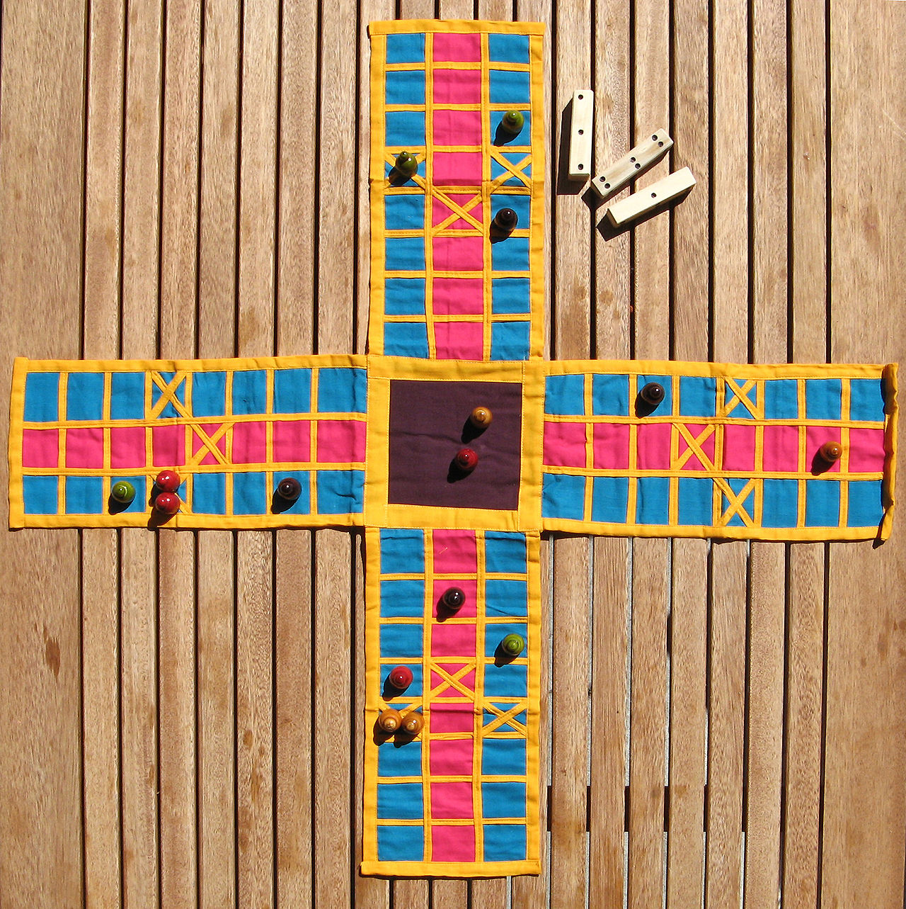

Пачиси
Пачиси (хинди पचीसी; от «пачис» — «двадцать пять») — настольная игра, появившаяся в Индии
более 4000 лет назад. Представляет собой игровое поле в виде креста, по которому игрок перемещает фишки.
Количество клеток, на которые перемещается фишка, определяется броском пяти, шести или семи раковин каури. Считается национальной игрой Индии.
История
Первые описание и игровые принадлежности пачиси датируются по индийским источникам и
результатам археологических раскопок третьим тысячелетием до нашей эры. Исключение составляет
игровое поле, современный вид которого известен не ранее чем с XVI века. Более поздние предметы,
которые можно рассматривать в качестве игрового поля пачиси, также известны с третьего тысячелетия
до нашей эры, но отличаются по форме: это могут быть как изображённое на камне поле, так и рисунок,
выполненный на ткани. Одной из версий игры, имеющей столь же древнее происхождение, является чаупар.
Правила игры
В пачиси могут играть два, три или четыре человека. При игре вчетвером игроки обычно образуют две команды.
В наиболее распространённом варианте пачиси каждый игрок получает четыре фишки, отличающиеся цветом.
Перед началом игры они устанавливаются в центральном квадрате игрового поля. Задача игрока — первым
обойти всеми фишками всё поле. В свой ход игрок бросает шесть раковин каури, а затем определяет, сколько
очков он заработал, считая количество раковин, лежащих отверстием вверх. Выбросив шесть и более очков,
игрок получает право на дополнительный бросок.
| Каури |
Очки |
Дополнительный бросок |
| 0 |
25 |
+ |
| 1 |
10 |
+ |
| 2 |
2 |
- |
| 3 |
3 |
- |
| 4 |
4 |
- |
| 5 |
5 |
- |
| 6 |
6 |
+ |

После броска можно передвигать только одну фишку,
находящуюся на поле. Чтобы ввести в игру дополнительную фишку, нужно выбросить не менее 6 очков.
Если в перемещение фишки заканчивается в клетке, где стоит фишка другого игрока, чужая фишка возвращается
в центральный квадрат, исключение составляют особые клетки-«за́мки». Обход поля заканчивается возвращением
в центральный квадрат, при этом игрок обязан выбросить точно количество очков.